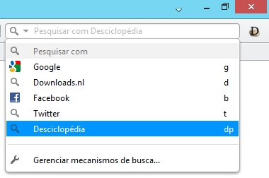

Adicionar busca
Para adicionar a busca na Desciclopédia/DescicloApp na barra de buscas do Opera siga essas instruções:
1. Aperte CTRL+F12 no teclado.
2. Vai abrir uma janelinha, clique na guia Pesquisa, vai aparecer seus buscadores.
3. Clique em adicionar ao lado.
4. Em Nome coloque "Desciclopédia", em Palavra-chave coloque "dp".
5. Em Endereço coloque http://desciclopedia.org/index.php?title=Especial:Busca&search=%s (a parte vermelha você pode colocar outro domínio alternativo)
6. Escolha se você quer usar a Desciclopédia como busca no speed dial e como buscador padrão
7. Clique em OK
8. Pronto :)
